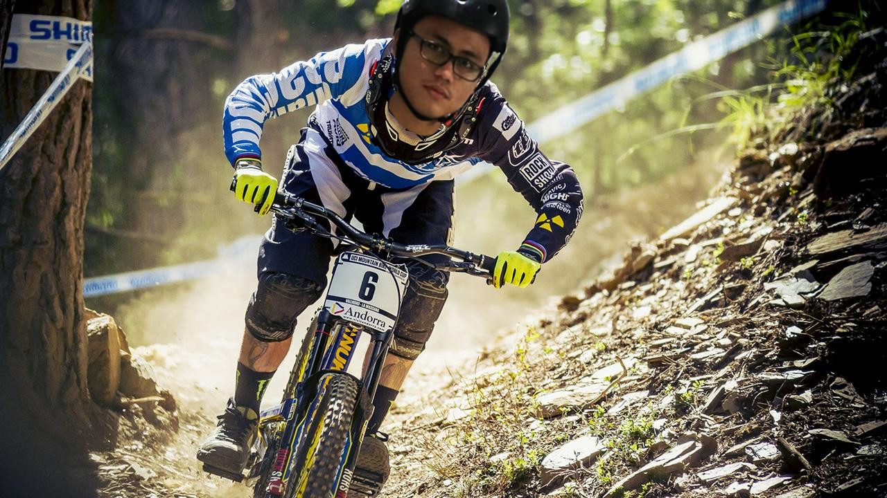
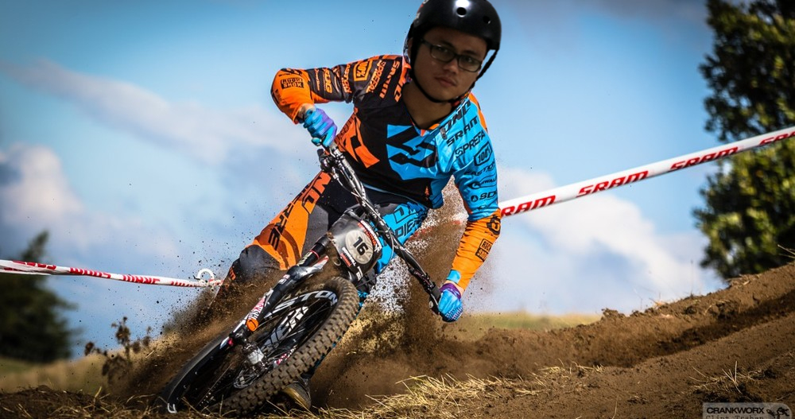

Nama Saya Muhammad Dzaki Arkaan. Saya sering dipanggil oleh orang tua saya dan tetangga sebagai Arkaan. Dan Saya sering dipanggil sebagai Dzaki oleh teman-teman saya di sekolah. Saya memiliki julukan nama keren yaitu Jack (dibaca Jek) Tetapi saya tidak itu saja. Saya juga sering dipanggil guru laboratorium saya sebagai OJeck. Waktu saya masih kecil, saya dipanggil tante saya sebagai Casper karena saya botak dan memiliki kepala yang besar dan putih.
Saya bersekolah di SMK-SMAK Bogor yang berjurusan Chemical Analyst beralamat di Ciheuleut,Bogor. Sebelumnya,Saya bersekolah Play Group di Solo yang bernama Palm Kids. Kemudian saya melanjutkan pendidikan saya ke TK ( Taman Kanak-kanak). Saya melanjutkan sekolah saya ke SD yang bernama SDIT Al-Hamidiyah di Depok. Setelah SD, Saya melanjutkan pendidikan saya ke SMPIT Al-Hamidiyah di Depok. Saya hanya bersekolah 2 tahun di SMP tersebut. Hal itu disebabkan bukan karena tidak naik kelas, melainkan ayah saya pindah kerja ke Bogor. Oleh karena itu, saya berpindah sekolah ke SMPN 3 Bogor yang terletak di Jln.Malabar.
Saya sangat gemar bersepeda gunung.
 
Sepeda yang saya adalah Polygon Xtrada 3 tahun 2017. Harga sepeda tersebut sangat terjangkau dengan spesifikasi ditawarkan. Polygon menggunakan frame berbahan ALUTech dengan size M. Shifter yang digunakan adalah Shimano Alus dengan 27 Speed dan RD Shimano Altus dan Shimano Acera. Rem yang digunakan adalah rem hidrolik DiscBrakekeluaran TektroAuriga

Saya memiliki cita-cita untuk bekerja di Arab Saudi dan tinggal di sana. Itu merupakan cita-cita saya saat masih SMP. Mengapa cita-cita saya bekerja dan tinggal disana ? karena saya sangat suka dengan onta dan minyak di sana walaupun harga minyak sedang turun. Ada hal lain yaitu karena saya ingin sekali tinggal di dekat kota suci yaitu Mekkah agar dekat jika ingin naik haji.